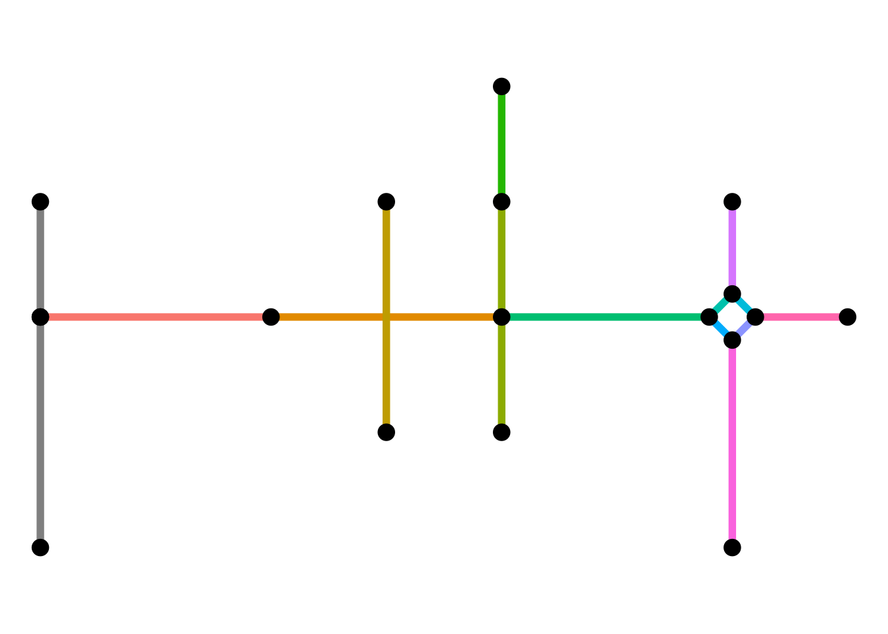
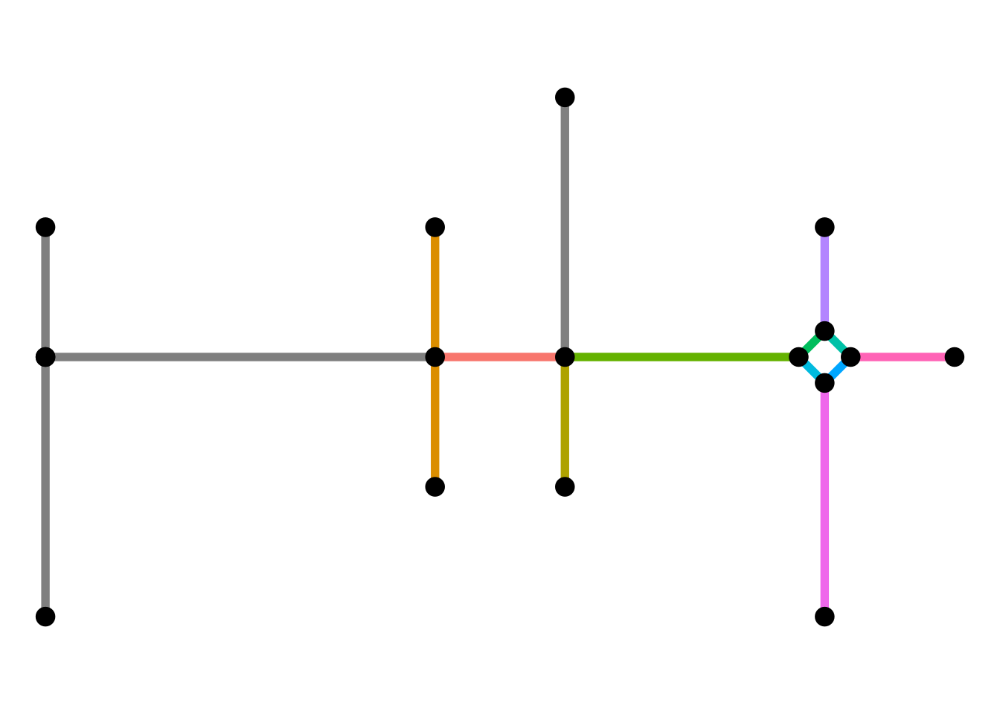
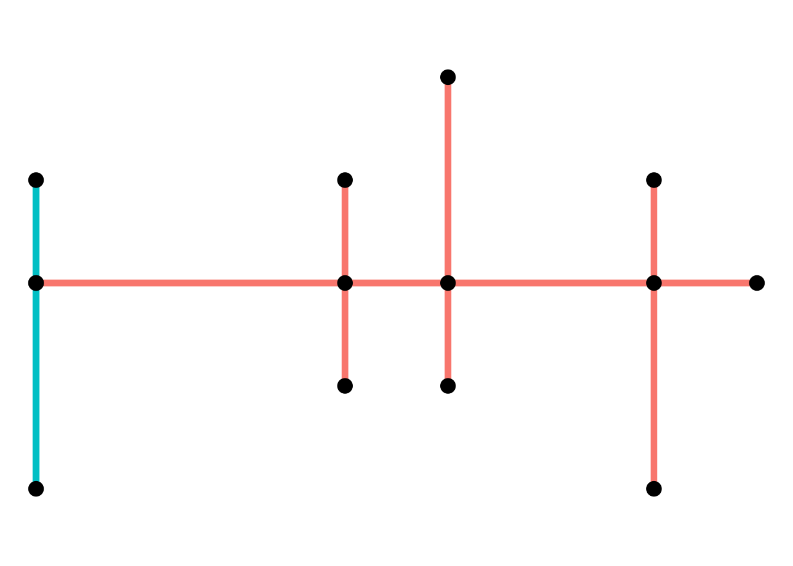
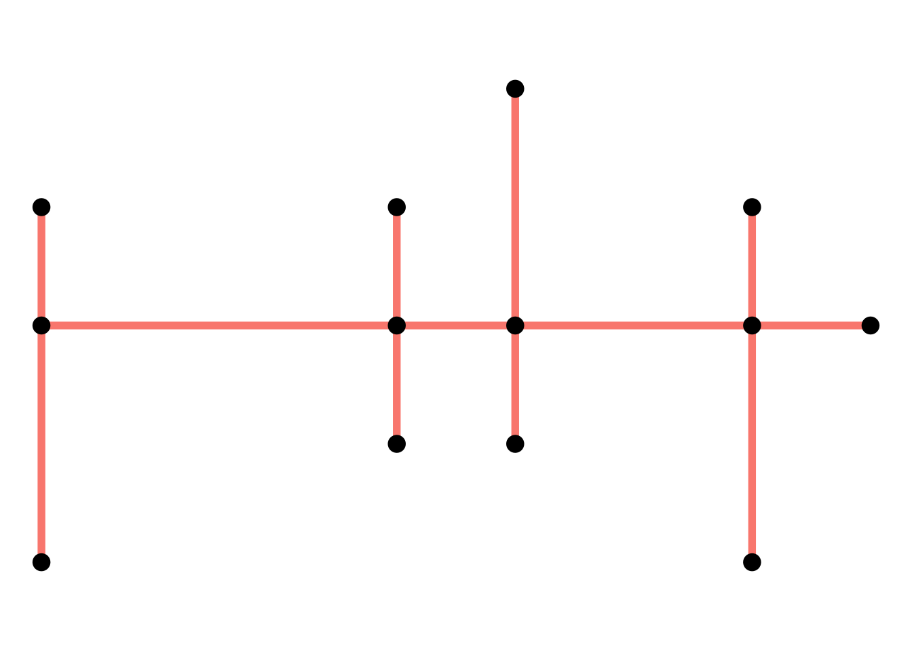
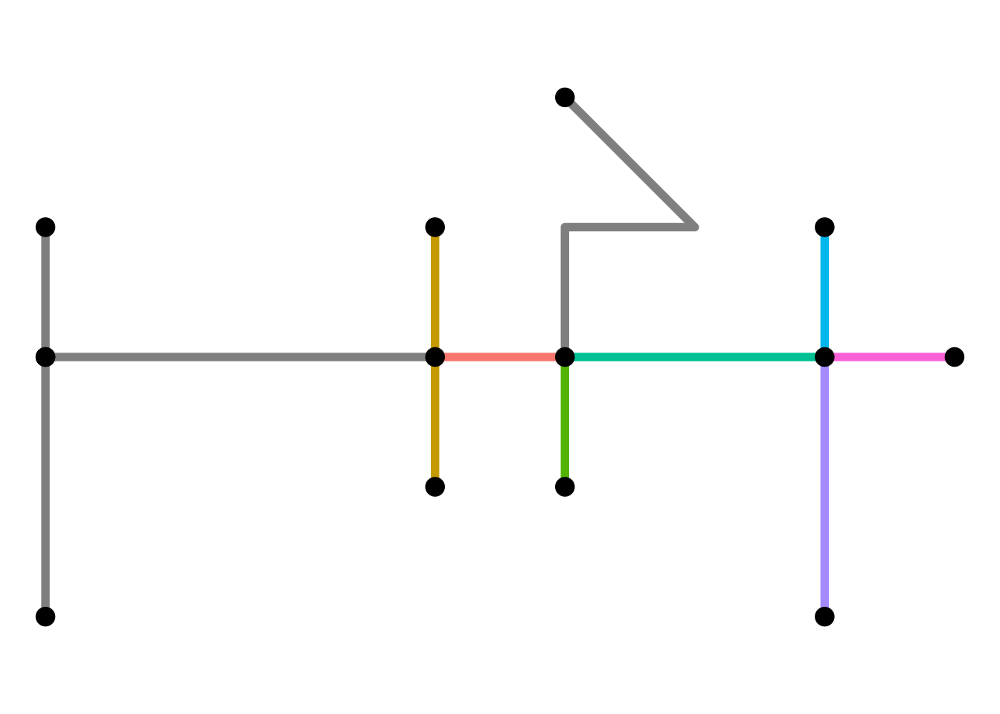

Unfortunately real-world datasets are not always as friendly as those used in tutorials. Cleaning the network data therefore forms a crucial part of a spatial network analysis workflow. This vignette presents some examples that may be of use when going through this phase.
The basics
Functions that modify the topology of the network are implemented in sfnetworks as spatial morphers. Network cleaning functions belong to this family. For the applications described here, it is sufficient to know that you can use any spatial morpher function inside the tidygraph::convert() verb to convert your network into a new structure. One thing you will notice is that tidygraph keeps track of the original node and edge indices through the columns .tidygraph_node_index and .tidygraph_edge_index. If you do not want them in your output, add .clean = TRUE to the tidygraph::convert() call.
Before presenting the cleaning functions that are currently implemented, lets create a network to be cleaned.
p01 = st_point(c(0, 1))
p02 = st_point(c(1, 1))
p03 = st_point(c(2, 1))
p04 = st_point(c(3, 1))
p05 = st_point(c(4, 1))
p06 = st_point(c(3, 2))
p07 = st_point(c(3, 0))
p08 = st_point(c(4, 3))
p09 = st_point(c(4, 2))
p10 = st_point(c(4, 0))
p11 = st_point(c(5, 2))
p12 = st_point(c(5, 0))
p13 = st_point(c(5, -1))
p14 = st_point(c(5.8, 1))
p15 = st_point(c(6, 1.2))
p16 = st_point(c(6.2, 1))
p17 = st_point(c(6, 0.8))
p18 = st_point(c(6, 2))
p19 = st_point(c(6, -1))
p20 = st_point(c(7, 1))
p21 = st_point(c(0, 2))
p22 = st_point(c(0, -1))
l01 = st_sfc(st_linestring(c(p01, p02, p03)))
l02 = st_sfc(st_linestring(c(p03, p04, p05)))
l03 = st_sfc(st_linestring(c(p06, p04, p07)))
l04 = st_sfc(st_linestring(c(p08, p11, p09)))
l05 = st_sfc(st_linestring(c(p09, p05, p10)))
l06 = st_sfc(st_linestring(c(p08, p09)))
l07 = st_sfc(st_linestring(c(p10, p12, p13, p10)))
l08 = st_sfc(st_linestring(c(p05, p14)))
l09 = st_sfc(st_linestring(c(p15, p14)))
l10 = st_sfc(st_linestring(c(p16, p15)))
l11 = st_sfc(st_linestring(c(p14, p17)))
l12 = st_sfc(st_linestring(c(p17, p16)))
l13 = st_sfc(st_linestring(c(p15, p18)))
l14 = st_sfc(st_linestring(c(p17, p19)))
l15 = st_sfc(st_linestring(c(p16, p20)))
l16 = st_sfc(st_linestring(c(p21, p01)))
l17 = st_sfc(st_linestring(c(p22, p01)))
lines = c(
l01, l02, l03, l04, l05,
l06, l07, l08, l09, l10,
l11, l12, l13, l14, l15
)
edges = st_sf(id = seq_along(lines), geometry = lines)
net = as_sfnetwork(edges) |>
bind_spatial_nodes(st_sf(geometry = st_sfc(p01, p21, p22))) |>
mutate(
foo = sample(letters, n(), replace = TRUE),
bar = sample(c(1:10), n(), replace = TRUE)
) |>
activate(edges) |>
bind_spatial_edges(st_sf(from = c(17, 18), to = c(16, 16), geometry = c(l16, l17))) |>
mutate(
foo = sample(letters, n(), replace = TRUE),
bar = sample(c(1:10), n(), replace = TRUE)
)
make_ggraph = function(x) {
ggraph(x, "sf") +
geom_edge_sf(aes(color = as.factor(id)), linewidth = 2, show.legend = FALSE) +
geom_node_sf(size = 4) +
theme_void()
}
make_ggraph(net)
Simplify the network
A network may contain sets of edges that connect the same pair of nodes. Such edges can be called multiple edges. Also, it may contain an edge that starts and ends at the same node. Such an edge can be called a loop edge.
In graph theory, a simple graph is defined as a graph that does not contain multiple edges nor loop edges. To obtain a simple version of our network, we can remove multiple edges and loop edges by using the morpher to_spatial_simple().
simple = net |>
convert(to_spatial_simple)
make_ggraph(net)
make_ggraph(simple)

By re-arranging the edges table before applying the morpher you can influence which edges are kept whenever sets of multiple edges are detected. For example, you might want to always keep the edge with the shortest distance in the set.
simple = net |>
activate(edges) |>
arrange(edge_length()) |>
convert(to_spatial_simple)
make_ggraph(net)
make_ggraph(simple)

Subdivide edges
When constructing a sfnetwork from a set of sf linestrings, the endpoints of those linestrings become nodes in the network. If endpoints are shared between multiple lines, they become a single node, and the edges are connected. However, a linestring geometry can also contain interior points that define the shape of the line, but are not its endpoints. It can happen that such an interior point in one edge is equal to either an interior point or endpoint of another edge. In the network structure, however, these two edges are not connected, because they don’t share endpoints. If this is unwanted, we need to split these two edges at their shared point and connect them accordingly.
In graph theory terms the process of splitting and edge is called subdivision: the subdivision of an edge (i.e. an edge from node to node ) is the addition of a new node and the replacement of by two new edges and .
The function to_spatial_subdivision() subdivides edges at interior points whenever these interior points are equal to one or more interior points or endpoints of other edges, and recalculates network connectivity afterwards.
To illustrate the workflow, lets consider a situation where an interior point in edge is shared with point in edge . That gives two possible situations:
-
is an interior point of . Since and are both interior points, neither of them is already a node in the network. Then:
- is subdivided at into two new edges and and new node .
- is subdivided at into two new edges and and new node .
- The new nodes and are merged into a single node with the edge set as incidents.
-
is and endpoint of . Since is an edge endpoint, it is already a node in the network. Then:
- is subdivided at into two new edges and and new node .
- The new node is merged with node into a single node with the edge set as incidents.
Note that an edge is not subdivided when it crosses another edge at a location that is not an interior point or endpoint in the linestring geometry of any of the two edges.
For our example network, this means:
subdivision = simple |>
convert(to_spatial_subdivision)
make_ggraph(simple)
make_ggraph(subdivision)

Smooth pseudo nodes
A network may contain nodes that have only one incoming and one outgoing edge. For tasks like calculating shortest paths, such nodes are redundant, because they don’t represent a point where different directions can possibly be taken. Sometimes, these type of nodes are referred to as pseudo nodes. Note that their equivalent in undirected networks is any node with only two incident edges, since incoming and outgoing does not have a meaning there. To reduce complexity of subsequent operations, we might want to get rid of these pseudo nodes.
In graph theory terms this process is the opposite of subdivision and also called smoothing: smoothing a node with incident edges and removes , and and creates the new edge .
The function to_spatial_smooth() iteratively smooths pseudo nodes, and after each removal concatenates the linestring geometries of the two affected edges together into a new, single linestring geometry.
smooth = subdivision |>
convert(to_spatial_smooth)
make_ggraph(subdivision)
make_ggraph(smooth)

Require equal attributes
Pseudo nodes may have a function by representing a location where a certain attribute changes. For example, from that point on the street has a different surface type. The require_equal argument allows you to specify one or more edge attributes that will be checked for equality before removing a pseudo node. If those attributes are equal, the node will be removed, but if not, it will remain. The argument value is evaluated using tidy selection, meaning you can specify column names unquoted, but also use selection helpers.
# Only smooth pseudo nodes if incident edges have the same value for "foo".
smooth_b = net |>
convert(to_spatial_smooth, require_equal = foo)
# Only smooth pseudo nodes if incident edges have the same value for all attributes.
smooth_c = net |>
convert(to_spatial_smooth, require_equal = everything())Summarize attribute values
The to_spatial_smooth() morpher also allows you to specify if and how you want to combine attributes of concatenated edges. This is done through the attribute_summary argument. How attributes should be combined is of course dependent on the type and purpose of each attribute. Therefore, the combination technique can be specified on a per-attribute basis. There are two ways to specify the combination technique for an attribute:
- As a character, referring to the name of a pre-defined combination technique in igraph. Examples include
mean,sum,firstandlast. See here for an overview of all implemented techniques. - As a function, taking a vector of attribute values as input and returning a single value. This is helpful when you want to combine attributes in a way that is not pre-defined.
Providing a single character or a single function (e.g. attribute_summary = "sum") will apply the same technique to each attribute. Instead, you can provide a named list with a different technique for each attribute. This list can also include one unnamed element containing the technique that should be applied to all attributes that were not referenced in any of the other elements. Note that the geometry-list column, the tidygraph index columns, as well as the from and to columns are not considered as attributes!
smooth_d = subdivision |>
convert(
to_spatial_smooth,
attribute_summary = list(foo = paste, bar = "sum")
)
smooth_d#> # A sfnetwork: 17 nodes and 16 edges
#> #
#> # A directed simple graph with 2 components and spatially explicit edges
#> #
#> # Dimension: XY
#> # Bounding box: xmin: 0 ymin: -1 xmax: 7 ymax: 3
#> # CRS: NA
#> #
#> # Edge data: 16 × 7 (active)
#> from to id foo bar .tidygraph_edge_index geometry
#> <int> <int> <dbl> <list> <dbl> <list> <LINESTRING>
#> 1 17 2 2 <chr> 7 <int [1]> (3 1, 4 1)
#> 2 2 7 8 <chr> 10 <int [1]> (4 1, 5.8 1)
#> 3 3 17 3 <chr> 6 <int [1]> (3 2, 3 1)
#> 4 17 4 3 <chr> 6 <int [1]> (3 1, 3 0)
#> 5 2 6 5 <chr> 10 <int [1]> (4 1, 4 0)
#> 6 7 10 11 <chr> 7 <int [1]> (5.8 1, 6 0.8)
#> # ℹ 10 more rows
#> #
#> # Node data: 17 × 4
#> geometry foo bar .tidygraph_node_index
#> <POINT> <chr> <int> <int>
#> 1 (0 1) b 3 1
#> 2 (4 1) n 7 3
#> 3 (3 2) x 9 4
#> # ℹ 14 more rowsSimplify intersections
Especially in road networks you may find that intersections between edges are not modeled by a single node. Instead, each leg of the intersection has a dedicated edge. To simplify the topology of your network, you might want to reduce such complex intersection structures into a single node. Hence, we want to reduce a group of nodes into a single node, while maintaining the connectivity of the network.
In graph theory terms this process is called contraction: the contraction of a set of nodes is the replacement of and all its incident edges by a single node and a set of edges that connect to all nodes that were adjacent to any node .
The morpher to_spatial_contracted() contracts groups of nodes based on a given grouping variable. The geometry of each contracted node is (by default) the centroid of the original group members’ geometries. Moreover, the geometries of the edges that start or end at a contracted node are updated such that their boundaries match the new node geometries.
Grouping variables are internally forwarded to dplyr::group_by(). That means you can group the nodes based on any (combination of) attribute(s). However, in this case, we want to group the nodes spatially, such that nodes that are very close to each other in space will form a group and get contracted. Spatial grouping of nodes can be done with the group_spatial_dbscan() function, which exposes the DBSCAN clustering algorithm through the dbscan package. The main parameter defines the radius of the neighborhood of each node in meters. By default, this is based on network distance rather than euclidean distance.
contraction = smooth |>
activate(nodes) |>
convert(to_spatial_contracted, group_spatial_dbscan(0.5))
make_ggraph(smooth)
make_ggraph(contraction)

Merge nodes at equal locations
The attentive reader may have noticed our network still consists of two disconnected components, caused by the fact that there are two seperate nodes at exactly the same location.
st_equals(contraction)
#> Sparse geometry binary predicate list of length 14, where the predicate
#> was `equals'
#> first 10 elements:
#> 1: 1
#> 2: 2, 11
#> 3: 3
#> 4: 4
#> 5: 5
#> 6: 6
#> 7: 7
#> 8: 8
#> 9: 9
#> 10: 10
with_graph(contraction, graph_component_count())
#> [1] 2The to_spatial_unique() morpher implements a special variation of node contraction: it contracts nodes that share their spatial location. All incident edges of the contracted nodes become incident to the new node.
unique = contraction |>
convert(to_spatial_unique)
make_ggraph(contraction)
make_ggraph(unique)

Visually we do not see a difference, but we have now reduced our number of components to 1:
with_graph(unique, graph_component_count())
#> [1] 1
# Plot components before and after.
contraction |>
mutate(comp = group_components()) |>
activate(edges) |>
mutate(comp = .N()$comp[from]) |>
ggraph("sf") +
geom_edge_sf(aes(color = as.factor(comp)), linewidth = 2, show.legend = FALSE) +
geom_node_sf(size = 4) +
theme_void()
unique |>
mutate(comp = group_components()) |>
activate(edges) |>
mutate(comp = .N()$comp[from]) |>
ggraph("sf") +
geom_edge_sf(aes(color = as.factor(comp)), linewidth = 2, show.legend = FALSE) +
geom_node_sf(size = 4) +
theme_void()

The to_spatial_unique() morpher also allows you to specify if and how you want to combine attributes of contracted nodes. This is done through the attribute_summary argument and works the same as explained above for to_spatial_smooth().
Overview
In a single pipeline, we can clean our dirty network as follows.
clean = net |>
activate(edges) |>
arrange(edge_length()) |>
activate(nodes) |>
convert(to_spatial_simple) |>
convert(to_spatial_subdivision) |>
convert(to_spatial_smooth) |>
convert(to_spatial_contracted, group_spatial_dbscan(0.5)) |>
convert(to_spatial_unique)
make_ggraph(net)
make_ggraph(clean)

Non-tidyverse workflow
All cleaning morphers have their internal worker exported as well. They can be used if you want to work outside the “tidy workflow”. The same cleaning operation can be done as follows:
simple = simplify_network(net)
subdivision = subdivide_edges(simple)
smooth = smooth_pseudo_nodes(subdivision)
groups = with_graph(smooth, group_spatial_dbscan(0.5))
contraction = contract_nodes(smooth, groups)
unique = contract_nodes(contraction, st_match(st_geometry(net)))
make_ggraph(net)
make_ggraph(unique)
